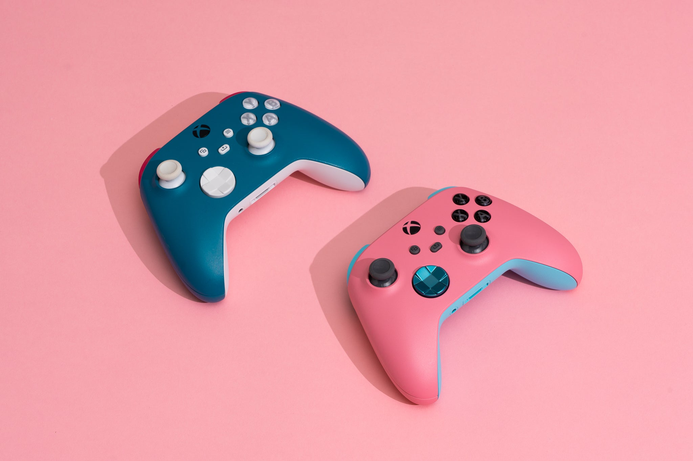
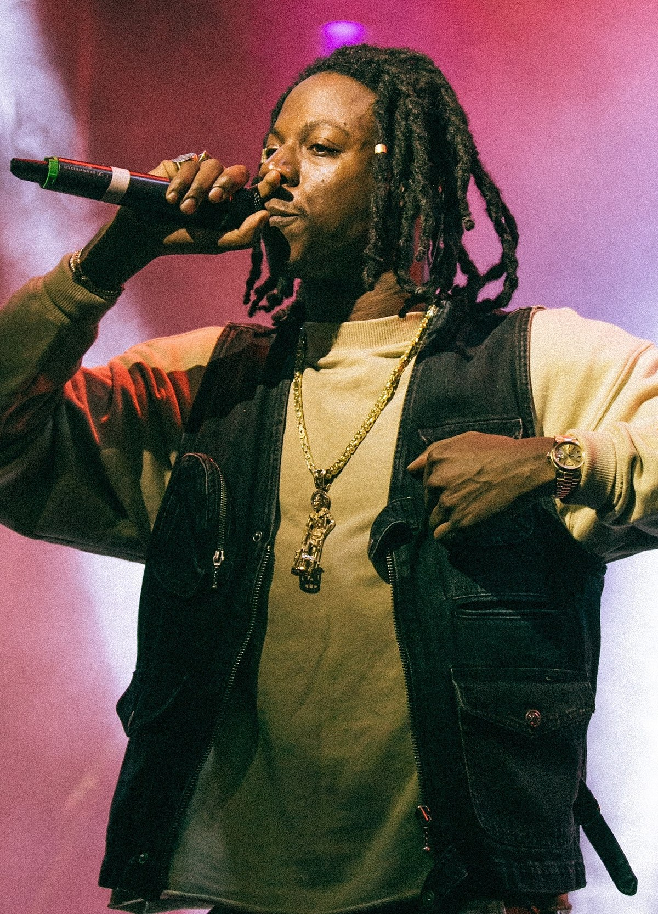

I find that playing video games is a fantastic method to communicate with my friends and meet new people at the same time. Below are some games I frequently play:
Chess has to be one of my favourite board games. Chess challenges your creativity as you evaluate alternate move possibilities and game strategy. In order to precisely predict the position of the pieces and visualise many moves in advance, you must have quick reasoning and spatial skills.
In my personal opinion, I think Kendrick Lamar is one of the greatest rappers of all time. His discography is amazing as well as the way he's able to speak about important issues such as racism or capitalism. He's a fascinating and sincere storyteller who has never strayed from his initial message or ideals. Some of my favourites from him are listed below:

Joey Bada$$ is an artist who doesn't have as much attention as they deserved. Arguably releasing one of the best albums in the 2010s, 1999, he's gone to create some other amazing albums and songs.My personal favourite songs made or feature him are listed below: